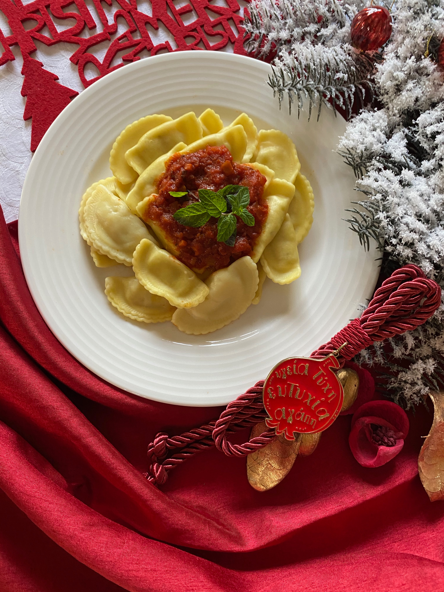

Ravioli

Description
Ravioli consists of a wrapping made of pasta that can be filled with meat,
cheese, or vegetables. Ravioli is typically square-shaped but can also have
other shapes. It is considered an Italian "dumpling."
Ingredients
- 2 cups flour
- 1 tsp salt
- 4 large eggs
- 2 tbsp olive oil
- Ravioli filling
Steps
- In a large bowl, whisk flour, salt, and eggs.
- Add olive oil and knead dough for 5 minutes. Then, leave dough in bowl covered with plastic wrap for 30 min.
- Take a small piece of dough and use a rolling pin to create a thin sheet. Use a cookie cutter to cut circles.
- Place 1 tsp of ravioli filling in the center of half of the circles. Place the second circle on top over the filling. You may use a fork to crimp the edges.
- Bring a pot of water to a boil and add ravioli. Once they float, they are done.